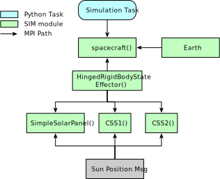
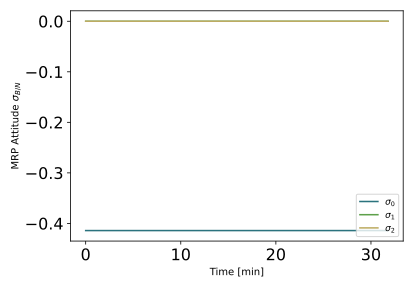
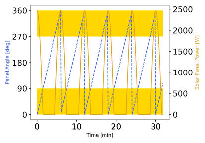
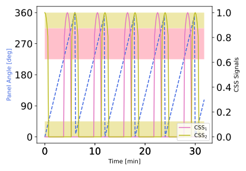

scenarioRotatingPanel
Overview
This scenario demonstrates how to set up a spacecraft with rotating panel. A Module: coarseSunSensor is then attached onto this panel such that it’s bore-sight axis rotates with the panel. Further, the panel state message is connected to Module: simpleSolarPanel.
The script is found in the folder basilisk/examples and executed by using:
python3 scenarioRotatingPanel.py
The spacecraft body frame \(B\) is at rest and rotated such that \(\hat{\bf b}_3\) is pointing at the sun. The panel is oriented relative to B such that the panel normal axis \(\hat{\bf n}\) is along \(\hat{\bf b}_3\) if the panel angle \(\theta\) is zero.

The hinge frame origin \(H\) and solar panel frame origin \(S\) are set to be the. The panel then is set to rotate at a positive rate about the \(\hat{\bf h}_2\) axis. Thus, the solar panel should provide electrical power at the beginning of the simulation, but power should vanish when the panel rotates beyond 90 degrees, etc.
The coarse sun sensor of CSS devices are added to this solar panel as well. The script connects the panel inertial state message to each CSS module create such that their sensor signals vary with the panel orientation. Each CSS unit has a boresight to edge field of view of 45 degrees, and the maximum signal output is set to 1. The CSS boresight orientation unit 1 is set to \({}^{\cal S}[1,0,0]\) in solar panel frame components. The second CSS units is pointing along \({}^{\cal S}[0,0,1]\).
Illustration of Simulation Results
The script will generate 3 plots. The first plot show the spacecraft orientation which is holding steady pointing \(\hat{\bf b}_3\) into the sun heading.
The second plot compares the solar panel rotation angle \(\theta\) relative to the generated solar power. The regions where we expect to see electrical power being generated are shaded in yellow.
The final plot compares the solar panel angle with respect to the two CSS signals. The angular regions where we expect the CSS units to get a signal are shaded with a color that matches the CSS data plot. Again good agreement is found with the predicted times when the rotating panel will yield CSS signals and when not.
